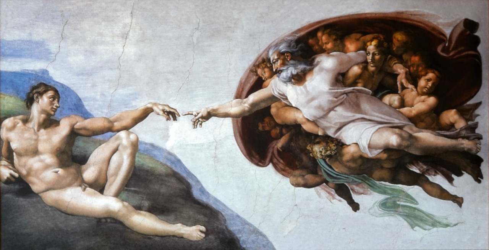

Man's Relationship with God

The Catholic Church holds the belief that man's relationship with God as our creator is foundational and integral to our existence. According to Catholic teaching, God is the source of all life and the creator of the universe, including humanity. Man is considered a unique creation, made in the image and likeness of God, which means that each individual has an inherent dignity and worth.
God desires a personal and loving relationship with each individual. Through the gift of free will, man has the capacity to choose to enter into this relationship with God or to reject it. The Church emphasizes that true fulfillment and purpose can only be found in communion with God.
The ultimate expression of God's love for humanity is found in the person of Jesus Christ. Through the incarnation, God became man to reconcile humanity to Himself. Jesus' life, teachings, death, and resurrection offer redemption and the opportunity for restored relationship with God.
Two major articles of importance in man’s relationship with God are Faith and Prayer. Faith involves trust, surrender, and openness to God's will. By placing our trust in God and accepting His grace, individuals can experience spiritual transformation and grow in their relationship with Him. Prayer is seen as a vital means of communication with God. Through prayer, individuals can express their love, gratitude, and needs to God, and seek His guidance and presence in their lives.
Man's relationship with God also extends beyond individual spirituality. The Church, as the Body of Christ, plays a crucial role in facilitating the encounter between man and God. The sacraments, particularly baptism, the Eucharist, and reconciliation, are channels of God's grace that strengthen this relationship and enable believers to grow in holiness.
In summary, the Catholic Church teaches that man's relationship with God as our creator is characterized by love, faith, and the pursuit of holiness. It is a dynamic and transformative connection that offers purpose, fulfillment, and the hope of eternal communion with God.